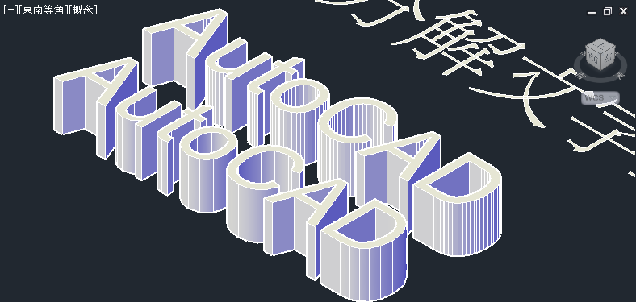

一般要建立3D文字時，首先需要把文字轉換成「2D聚合線」，通常我們會使用Express工具中的TXTEXP指令分解文字，再來透過REGION指令轉換為「面域」，最後使用UNION指令「聯集」，但是步驟稍多而且「聚合線掣點」數目太多，轉成3D實體時會影響效能。
這裡分享AutoCAD外掛程式，透過Text2Geom分解文字工具，可以快速將文字分解，並且自動轉為「面域」，優點是「聚合線掣點」數目不會很多，所以在轉成3D實體就很方便又順暢～

註：AutoCAD Exchange 外掛程式，目前僅支援2012及2013以上版本。
影片操作：
外掛程式下載（點我）
AutoCAD外掛程式安裝及說明：
https://www.autocad-tw.com/t14107-topic
20131105補充：這裡分享另外兩種方式
1.使用Express工具「2D化物件」FLATTEN指令。
2.如果沒有Express工具，可以使用預設功能 WMFOUT及WMFIN。
詳細步驟請參考以下影片：